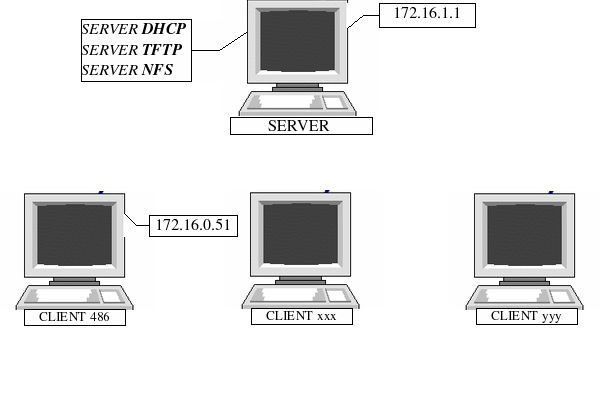

3. Il bootstrap via rete in pratica
3.1 Configurazione del laboratorio

La macchina prescelta come SERVER dovra' assumere le seguenti funzioni:
SERVER DHCP (per attribuire una identità ai client)
SERVER TFTP (per fornire una immagine del kernel ai client)
SERVER NFS (per dare un filesystem funzionante ai client)
I client, invece, devono essere istruiti
attraverso un floppy di boot (nel nostro caso); questo si puo'
creare con 'etherboot' (www.etherboot.org), che e' un software
in grado di creare immagini ROM, e quindi capace di far
bootstrappare le macchine attraverso la rete.
Preciso inoltre che per il nostro laboratorio sono state utilizzate le seguenti distribuzioni:
Per il SERVER: RedHat 7.3
Per il CLIENT: Slackware 9.0
Inutile dire che ogni configurazione verra' eseguita solo dal lato SERVER (i client saranno avviati da un floppy di boot e quindi non hanno bisogno di configurazioni fatta eccezione per LA CREAZIONE DEL FLOPPY DI AVVIO, che vedremo più avanti).